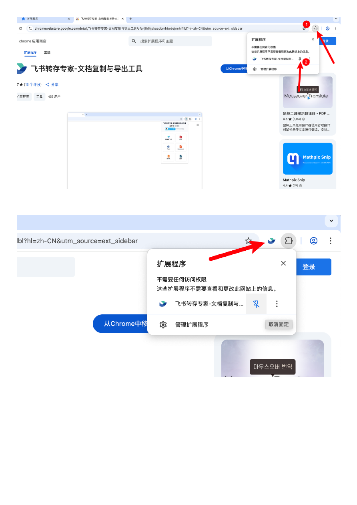

使⽤⼿册
👾 ⻜书转存专家是⼀个浏览器扩展，不限制电脑平台，可以帮助你将⻜书⽂档转存（保存⽂档
到你⾃⼰的⻜书云⽂档的云盘⾥）或者导出为多种格式到本地。
是帮助你收集整理⽂档的强⼤提效⼯具。
只要有阅读⽂档的权限即可操作
本⼯具是基于⻚⾯实现抓取来获取⽂档数据的，不是破解⼯具，不会收集⽂档内容，⽂档作
者不会收到通知。
主要功能（以最新版本为准）
1.多格式导出
• ✅复制到我的⽂档：转存⽂档到你的⻜书空间
• ✅PDF导出：完整保留⽂档样式，适合打印和分享
• ✅Word导出：⽣成可编辑的Word⽂档
• ✅HTML导出：⽣成HTML，⽅便离线打开预览
• ✅Markdown导出：⽣成纯⽂本格式和附件（图⽚，视频，压缩包⽂件），⽅便在其他平台使⽤
• ✅附件批量下载：⼀键把⽂档⾥附件下载出来（会员专享）
2.内容⽀持
• 📝⽂本和标题
• 📊表格（电⼦表格，多维表格不⽀持）
• 📷图⽚
• 📋列表
• 💻代码块
• 💭引⽤和提⽰框
• ➖分割线
😶 本⼯具适配chrome浏览器和Edge浏览器，其他浏览器不保证可⽤
Edge浏览器（微软
浏览器）
Chrome浏览器（⾕歌
浏览器）
🛎 更新⽇志
0.5.11
• 画板逻辑更新（⻜书修改了接⼝）
• 电⼦表格⽀持⼀次收集所有sheet
0.5.8
• 新增了转存为多维表格功能
之前的多维表格转存是转存为普通⽂档，且不⽀持附件，只包含当前表格，这次可以说是完
美转存了
• 年费会员⾦⾊标记
• 收藏快捷操作功能
• 增加公告显⽰，随时更新信息
0.5.2
批量能⼒
• ⽀持收集云盘⾥⽂件夹、⽂档内引⽤
• 批量导出针对所有类型⽂档做了处理
⽂档⽀持
• 修复某堂⽂档转存格式错乱
• 重新⽀持某破局⽂档的转存
• ⽀持⻜书妙计对话导出为txt
• 多维表格增加⼀键导出excel（⾏列顺序保持⼀致）
0.5.0.0
侧边栏
ui优化，增加分类，⽂档操作状态优化
获取⽤⼾信息速度提升，增加重试按钮
增加⽰例⽂档免费体验
⽀持普通⽂档内的电⼦表格
普通⽂档内的多维表可以通过「批量导出多维表格按钮」导出
多维表格⽀持导出新增
excel下载，导出md格式优化
批量导出⽀持转存（
beta）
其他细节优化等等
0.4.5:
修复导出图⽚进度不展的
bug
转存和
md导出对⼤⽂件优化
跨账号转存交互优化
批量导出⽀持
word
0.4.4:
修复⽂档换⾏丢失的问题
增加历史记录功能
增加邀请充值送会员服务
ui更新
0.4.3：
增加了多维表格导出为
md格式（包含图⽚和视频，转存是⽆法导出附件的）
增加了⻜书妙记视频下载
修复
pdf下载的bug
修复偶尔的代码块丢失
bug
批量导出⽀持
txt类型⽂档
0.4.2：⽀持表格⽂档下载到本地，增加md导出⼤⽂档模式，增加去⽔印，ui更新等优化
0.4.0：多维表格⽀持转存
0.3.9：⽀持了⾦⼭⽂档！
⽀持⾦⼭⽂档⾥的
word导出为pdf，ppt导出为pptx
使⽤⽅法都是点击导出
0.3.8：原来的操作在顶部改为侧边栏，⽅便操作
0.3.7：转存分栏内容可以在⼀⾏显⽰
导出
md⽀持所有画板和思维导图
我的云盘⽂档列表⻚⾯可以收集⽂档链接
Md批量导出增加设置项，可⼿动增加⽂档和粘贴⽂档链接
0.3.5：⽀持切换账号转存，⽀持⼤⽂档导出pdf，显⽰了当前登录的⻜书账号⽅便知道转存
到哪个账号
0.3.3：会员⽀持超⼤⽂档的转存
已知问题
:
👺 ⻜书有⼀类旧版⽂档，地址是以docs或doc开头的没办法保存，⽰例如下
https://xxx.feishu.cn/docs/xxxx，
https://xxx.feishu.cn/doc/xxxx
👺 转存⽬前不⽀持视频
普通⽂档内⽀持
95％以上的类型，也就是常⽤的类型都⽀持
常⽤的内容都可以覆盖到
如果你可以访问
Chrome应⽤商店，可以直接点击链接安装（⽤chrome
浏览器）
https://chromewebstore.google.com/detail/%E9%A3%9E%E4%B9%A6%E8%BD%AC%E5%AD%98%E4%B8%93%E5%AE…
chromewebstore.google.com
⽆法访问
chrome商店的话，推荐使⽤微软的edge浏览器访问进⾏安装
https://microsoftedge.microsoft.com/addons/detail/cbcbonoeikcdhobbmoaakgodaiknmidk
⻜书转存专家
⻜书、⾦⼭导出⼯具，持续迭代中
有任何问题欢迎加⼊qq群741683982⼀起交流或者发给我发邮件:botzgbj@gmail.com强⼤的⻜
书
(lark，⾦⼭⽂档)⽂档导出⼯具，⽀持导出pdf、word、markdown等多种格式使⽤说
…
还是搞不定？
(qq群号:741683982)私聊群主帮你解决
如果⽤
chrome浏览器但是⽆法访问应⽤商店点下⾯链接安装
https://www.crxsoso.com/webstore/detail/cfenjfhlhjpkaaobmhbobajnnhifilbl
⻜书转存专家
|Chrome扩展-Crx搜搜
强⼤的⻜书⽂档、⾦⼭⽂档、⻜书多维表格转存、导出、功能增强⼯具，⼤⽂档
pdf、
转存，跨⻜书账号转存，⽀持
PDF、Word、Markdown、HTML、多维表格等功能
如何安装
zip安装包⽂件？（有压缩包的时候的安装⽅式，⼀般⽤不到）
1. 解压缩这个安装包
2. 浏览器访问这个地址：
a. edge浏览器访问 edge://extensions/ ，勾选“开发者模式”。
b. google浏览器 chrome://extensions ，勾选“开发⼈员模式”。
3. 加载扩展
◦ edge浏览器点击 加载解压缩的扩展
◦ google浏览器点击 加载未打包的扩展
🚅 恭喜！你已经安装了扩展，请继续看
⽆论通过哪种⽅式进⾏安装都需要把扩展固定到顶部才能使⽤
，⽅法如下
安装之后然后点击右上⻆扩展图标，找到扩展点击固定

然后在顶部就可以看到⻜书扩展图标了
在⻜书⽂档⻚⾯点击这个⻜书插件图标就可以开始导出了